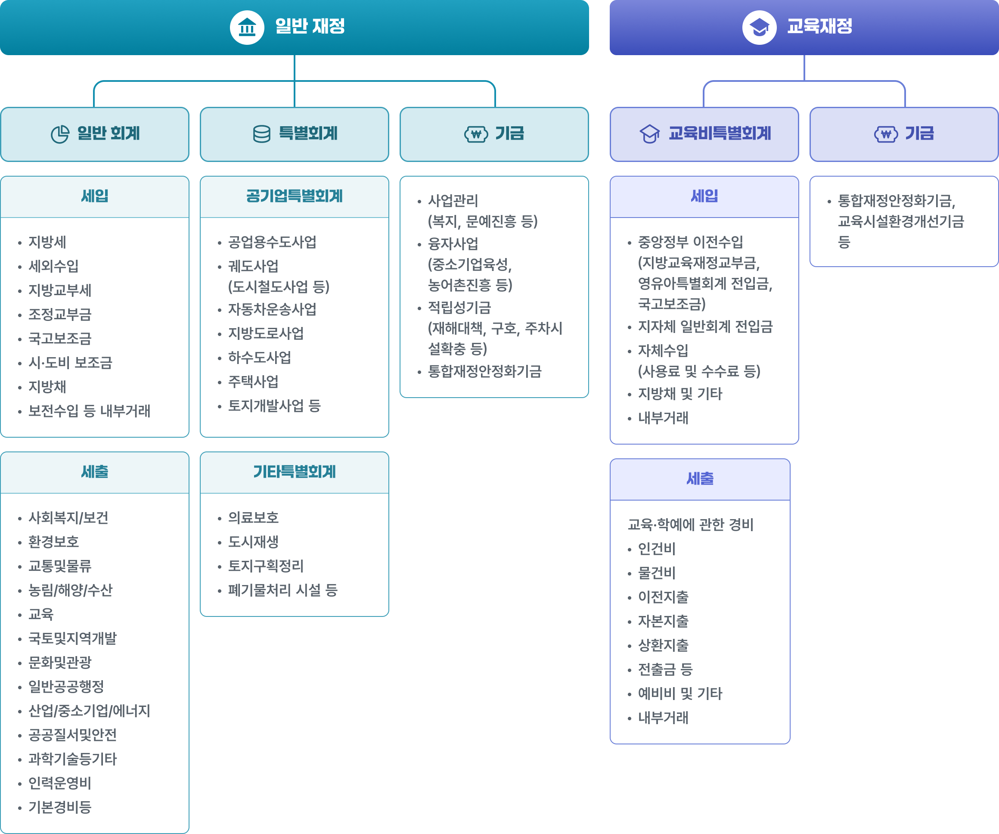
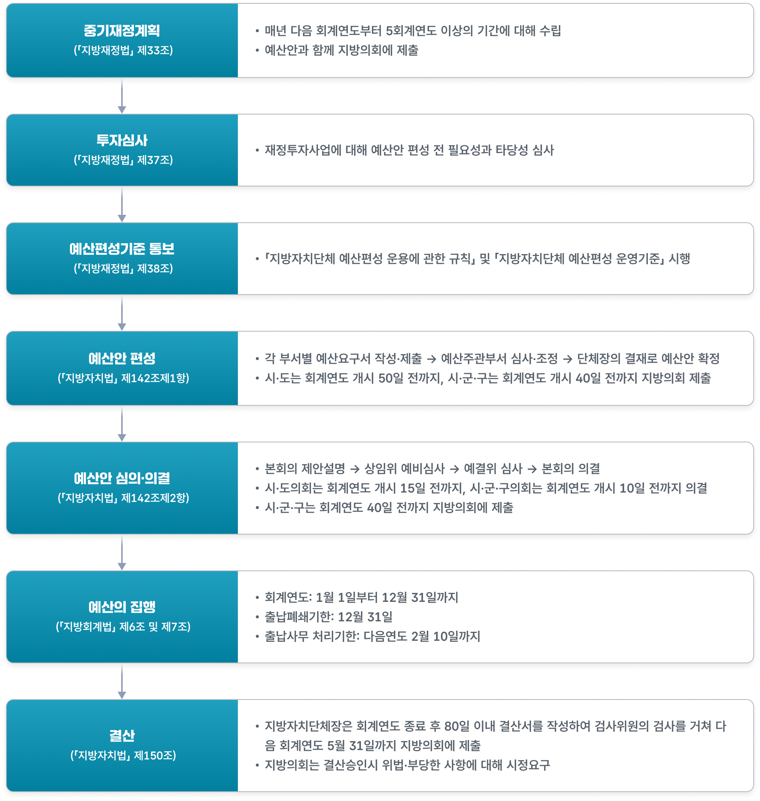

예산・결산・운용절차
1. 지방재정의 의의
지방재정은 각 지방자치단체가 자신의 관할 구역 주민들의 공적인 수요를 충족하기 위해 수행하는 모든 재정활동을 의미합니다. 보다 구체적으로는, 지방자치단체가 주민에게 필요한 행정서비스를 제공하기 위해 수입을 확보하고 지출을 집행하며, 그 과정에서 자산과 부채를 관리·처분하는 활동 전반을 말합니다. 지방자치단체는 지방세, 세외수입(사용료·수수료·분담금 등), 중앙정부 및 상급자치단체로부터의 교부세·보조금 같은 의존수입, 그리고 지방채 등을 재원으로 활용합니다. 이렇게 마련한 재원을 바탕으로 관할 구역의 자치사무와 법령에 의해 지방자치단체에 속하는 사무에 필요한 경비를 지출함으로써, 지역 주민의 삶의 질을 높이고 지방자치를 실질적으로 실행하게 됩니다.
2. 지방재정의 구조
우리나라 지방재정은 일반재정과 교육재정을 분리함으로써, 일반 행정과 교육 분야 재정이 서로 목적과 용도에 맞게 운영되도록 구조를 나누고 있습니다.
일반재정은 일반회계·특별회계·기금으로 구성되며, 지방자치단체의 일반 행정서비스와 각종 공공사업을 위한 재원을 관리합니다. 일반회계는 지방자치단체의 기본적인 행정 기능 수행에 필요한 대부분의 수입·지출을 포괄하는 가장 기본 회계입니다. 특별회계는 상·하수도 같은 지방공기업 재정과 기타 특정 목적 사업을 별도로 관리하기 위해 두는 회계이고, 기금은 특정 목적 자금을 보다 신축적으로 운용하기 위해 설치하는 재원입니다.
교육재정은 시·도 교육청이 학교 교육과 교육 관련 사업을 위해 운영하는 재정으로, 교육비특별회계와 교육 관련 기금으로 별도로 관리됩니다. 이렇게 일반재정과 교육재정을 분리함으로써, 일반 행정과 교육 분야 재정이 서로 목적과 용도에 맞게 운영되도록 구조를 나누고 있습니다.

3. 지방재정의 과정
지방재정과정은 지방자치단체가 사용할 수 있는 재원을 누구에게, 어떤 목적과 내용으로, 얼마를 배분·집행할지 공식적으로 결정하는 절차입니다. 이 과정은 예산안 편성, 지방의회 심의·의결, 예산 집행, 결산이라는 네 단계로 이루어집니다. 기금 역시 별도 법률(지방자치단체 기금관리기본법)에 따라 예산과 거의 동일한 방식으로 편성·심의·집행·결산이 이루어집니다.
당해연도 예산이 집행되려면 그 전년도에 중기지방재정계획 수립과 투자심사, 예산안 편성 및 지방의회 심의·확정이 먼저 진행되고, 집행 결과에 대한 결산은 다음 연도에 이루어지므로 전체 재정과정은 통상 약 3년이 걸린다고 볼 수 있습니다.
이 과정에서 지방자치단체와 지방의회는 기능을 나누어 상호 견제와 균형을 이루도록 설계되어 있습니다. 예산안 편성과 집행은 지방자치단체장이, 예산안 심의·확정과 결산 승인은 지방의회가 담당하며, 이러한 권한 분리는 지방재정의 민주성과 효율성을 확보하기 위한 제도적 장치입니다.

자료 : 「지방재정법」, 「지방자치법」, 「지방회계법」을 바탕으로 작성